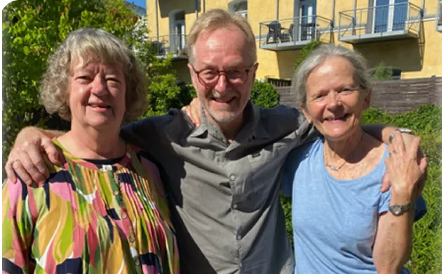
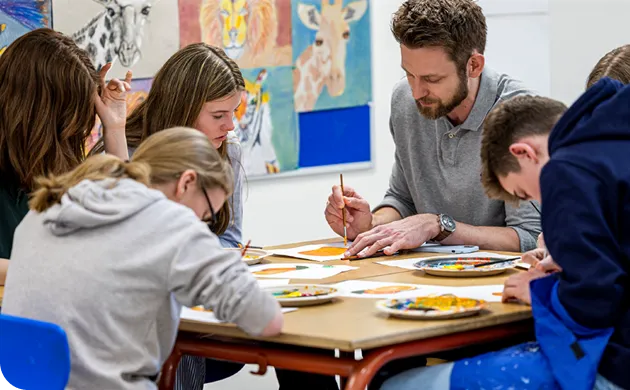

“Sct. Marie er ikke bare en skole, det er en familie”
- Anna, lærer
“Skolens fysiske rammer er virkelig hyggelige og lidt Harry
Potter agtige med alle mulige små kroge og hjørner”
- Ahmed, forældre

“Det er ikke bare en skole, det er et andet hjem”
- Cirkeline, Elev
Vores værdier
Kom og vær med i noget stort
Er du og dit barn klar til at blive en del af et fællesskab?
Hvor både lærere og elever bliver som en ekstra familie. Hvor tryghed, nærvær og respekt danner rammen om hverdagen, og hvor der er plads til både faglighed, tro og trivsel.
Her har du mulighed for at skrive dit barn op og tage første skridt ind i et skoleliv med mening, sammenhold og varme.

Særlige muligheder på Sct. Mariæ Skolen
Ofte stillede spørgsmål
Hvilke klassetrin tilbyder skolen?
Sct. Mariæ Skole tilbyder undervisning fra 0. – 10. klasse
Hvor mange elever går der på skolen?
På Sct. Mariæ Skole har vi plads til 546 elever, og med en relativ lille udskiftning ligger elevtallet som regel omkring 540 elever. Udviklingen i skolens elevtal kan ses på uddannelsesstatistik.
Hvor mange elever er der i klasserne?
På Sct. Mariæ Skole har vi 26 elever i alle klasser
Hvilke sprog undervises der i?
På Sct. Mariæ Skole foregår undervisningen på dansk. I sprogfagene foregår undervisningen delvist på dansk og delvist på det pågældende sprog – alt efter elevernes niveau.
Skal man være katolik for at gå på skolen?
Nej, Sct. Mariæ Skole er åben for alle elever uanset religion. Dog forventer vi, at såvel elever som forældre og personale kan se sig selv i skolens værdigrundlag og efterlever det i praksis.